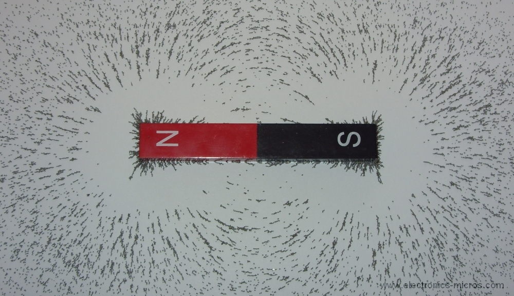

A magnet is a material object that produce magnetic feild. Every magnet has at least north pole and south pole.
A bar magnet is a rectangular piece of object, made of iron, steel, nickel, cobalt, and their alloys that shows permanent magnetic properties. It has a north pole and a south pole at either ends of the bar.

There are two types of bar magnets - natural and artificial. Natural bar magnets are weaker than artificial bar magnets.